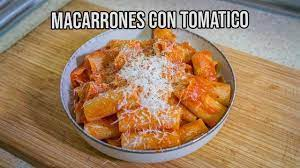

Classic macaroni with Bolognese sauce
This recipe is the favorite of the most "normal" engineer of the trio.
It is easy to make, and although it seems bland, it's actually very tasty.
Ingredients
- 400g of macaroni
- 1 hole onion
- 800g of your prefered tomato sauce
- 1 spoon of oregano
- 2 chorizos (optional)
- Olive oil and salt
Procedure
- Dice the onion and bring it to a pan
- Add olive oil and salt. Bring the heat to low
- Once the onion looks like it has browned a little bit, turn off the heat
- Cut the chorizos and add them
- Add the tomato and let the pan sit for around 20min at low heat
- Add the cooked macaroni
- Cook for another 2min in the pan
- SERVE AND ENJOY
Back to top
Back to main page